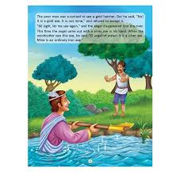

"The Honest Woodcutter" is a classic Indian fable (often linked to Aesop's fables) about a hardworking, poor man who loses his only iron axe in a river. A deity or fairy retrieves golden and silver axes, but the woodcutter honestly declines them, only accepting his own. He is rewarded with all three axes for his integrity.
Key Elements of the Story
The Incident:
A woodcutter (sometimes named Kiran or Ravi) is working on a riverbank when his axe falls into the water.
The Temptation:
A deity (water fairy, angel, or Hermes) offers to help and retrieves a gold axe, then a silver one, but the honest woodcutter denies that they belong to him, stating he only owns an iron one.
The Reward:
Impressed by his honesty, the deity rewards the woodcutter with all three axes.
The Moral:
The story highlights that "honesty is the best policy," suggesting that integrity brings rewards, whereas greed does not.